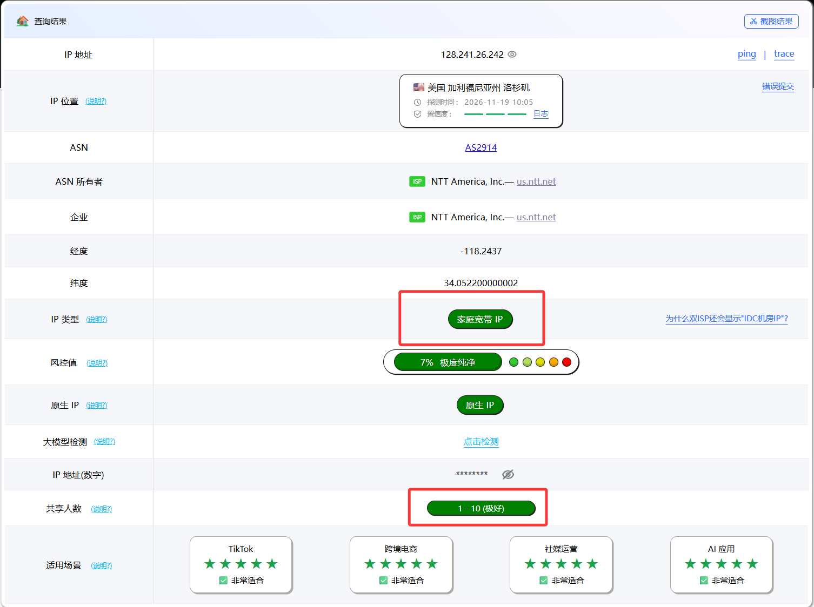
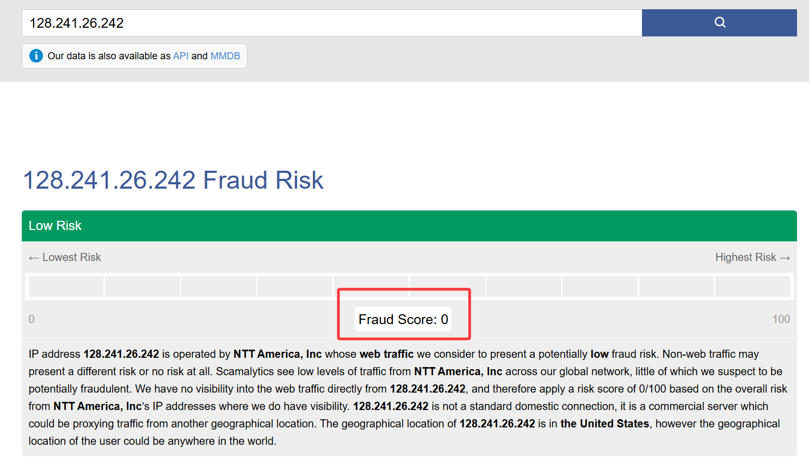
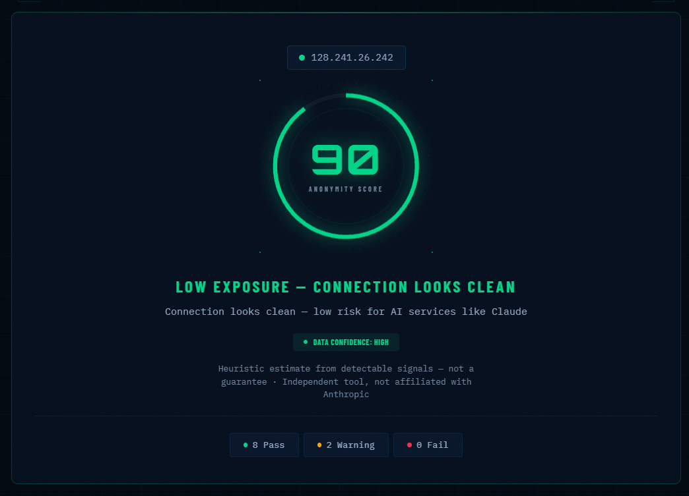
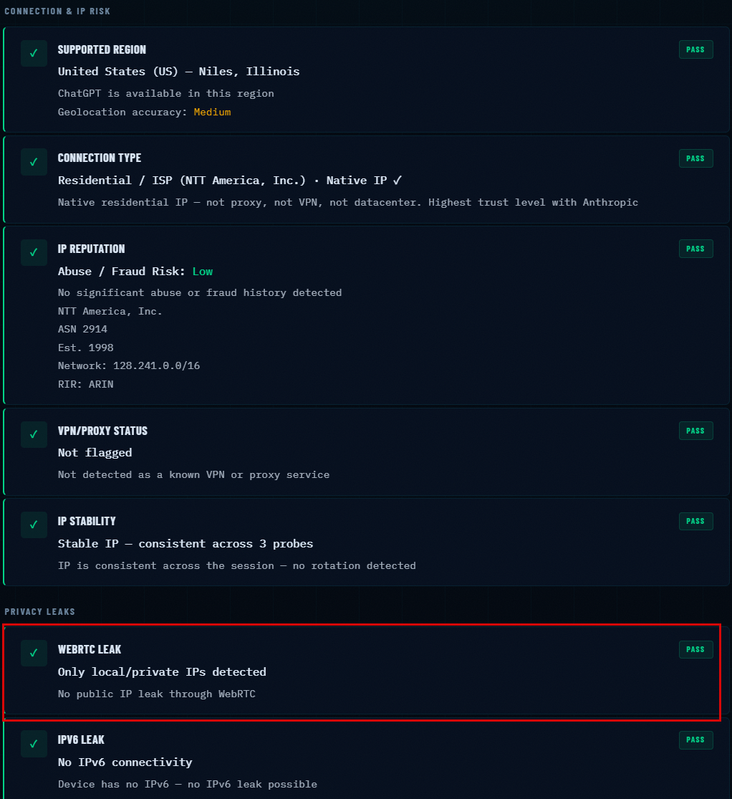
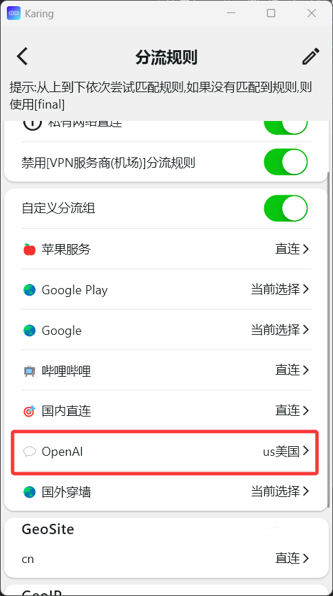

🕓2026年11月23日
视频教程：▶
充了 ChatGPT Plus 会员，却发现回答突然敷衍（变笨）、无法联网、不能画图，甚至频繁弹出风控警告？(💡 还没开通 Plus 或因为没有海外信用卡被卡在支付环节的朋友，文末也给大家整理了安全正规的 ChatGPT / Claude 会员一站式代充通道，支持独立账号升级，不怕黑卡封号。)
这并不是模型退化，而是触发了官方的 “IP 降智与风控机制”。
今天这篇文章，就带大家用 3 个完全免费的在线工具 测出你手头节点的真实“血统”，并手把手教你在客户端设置 TUN 模式防泄露 与 专属分流规则，彻底告别频繁切 IP 导致的降智与封号！
一、 为什么你的 AI 会被“降智”？（底层原因拆解）
AI 平台（OpenAI / Claude / Gemini）对网络环境有极高的风控标准，导致降智的核心原因通常只有两个：
1、万人共用的机房 IP（IDC）
普通廉价机场的节点大多租用自阿里云、AWS、DigitalOcean 等数据中心，成千上万人共用同一个出口 IP，早已被官方列入重点风控名单，直接限制高算力模型调用。
2、WebRTC 协议泄露真实 IP
很多人在客户端只开启了默认的“系统代理”（HTTP/SOCKS），浏览器在进行网页实时通信（WebRTC）时，其 UDP 请求会绕过系统代理，直接通过本地宽带连接外部服务器——导致你开着美国节点，网页却抓到了你的国内真实宽带 IP，瞬间触发降智。
二、 3 个免费检测工具，给你的节点做个“全面体检”
在配置客户端之前，先打开浏览器访问以下三个网址，依次排查你当前节点的纯净度：
| 检测工具 | 核心检测指标 | 合格标准 |
| 1.Ping0 | IP 类型、风控值 | 家庭宽带（ISP）最佳，风控条呈绿色 |
| 2. Scamalytics |
欺诈评分（Fraud Score） | 10 分以下闭眼用，超过 30 分淘汰 |
| 3.AIProxyScan |
AI 综合环境、WebRTC | 70 分以上可用（85 分家宽），WebRTC 绿灯 |
实操排查要点：
1、Ping0（验血统）：重点看 IP 类型 与 风控值进度条。家庭宽带或原生 IP 最稳；如果显示“机房/数据中心”且风控条泛红，建议直接更换。

2、Scamalytics（查底细）：粘贴出口 IP 查询欺诈评分。0～10 分 为极品纯净 IP；超过 30 分 说明该 IP 黑历史较多，极易触发验证码或降智。

3、AIProxyScan（测环境）：一键扫描全套浏览器环境。普通机场节点能达到 70 分以上 就算优秀，85 分以上 属于独享家宽水准。（注：因为大多数人的电脑为中文系统与东八区时间，通常会扣掉十几分，属正常现象。只要 WebRTC 没有泄露、不在黑名单、地区显示支持 全部为绿灯，就可以放心使用！）

三、 彻底封堵 WebRTC 泄露：开启 TUN 模式（虚拟网卡）
如果在上面第三步测出 WebRTC 红色报错（真实 IP 泄露），千万不要再去折腾容易失效的浏览器老旧插件，最彻底、全软件通用的解决方案是开启客户端的 TUN 模式：
1、技术原理：开启 TUN 模式后，客户端会在系统底层虚拟出一张网卡，强制接管电脑所有软件与浏览器的 TCP/UDP 底层流量。这样一来，浏览器的 WebRTC 请求也会被强制塞进代理通道，彻底堵死真实 IP 泄露漏洞。
2、操作方法（以 Karing 为例）：打开 Karing 主界面，确保顶部处于 【规则】 模式。直接开启 【TUN 模式】 开关。
3、刷新 AIProxyScan 网站， WebRTC 检测瞬间变为绿色通过！

日常使用提示：开启 TUN 模式并配合国内直连分流后，访问国内网站依然走本地高速宽带，不影响网速。日常使用 AI 和流媒体时，建议一直保持 TUN 模式开启。
四、 客户端防关联分流：把 OpenAI 死死锁定在原生节点
很多朋友看视频习惯用延迟低的香港节点（注：香港地区不支持 ChatGPT），每次用 AI 再手动切到美国节点，这样频繁切换 IP 极易触发风控。
通过自定义分流规则，我们可以实现：日常刷剧走高速节点，而访问 ChatGPT / Claude / Gemini 时自动锁定到同一条美国原生节点，既省流量又防关联：
1、建美区专属节点池：
进入 Karing 的 【分流】→【自定义自动选择】→ 点击右上角 +，新建一个名为 us美国 的分组。在订阅列表中只勾选 1～2 条测出来的最稳定美区原生节点，并将自动测速间隔调大（如 3600 秒以上），避免客户端频繁自动切换节点导致 IP 跳动。
2、将 AI 服务绑定至该节点池：
回到 【分流】→【分流规则】，找到 OpenAI（可顺手一并设置 Google Gemini 和 Claude），点击右侧的 当前选择 >，展开【自定义自动选择】并选中刚才建好的 us美国 组。
3、调高规则优先级（避坑关键）：
Karing 的分流规则是从上到下依次匹配的。请确保 OpenAI 排在 国外穿墙 以及最底部的 final 规则上方（可在【自定义分流组】右上角菜单调整顺序），防止 AI 流量被通用代理规则提前截走。

很多粉丝私信问我：IP 和环境都全绿灯了，为什么账号还是被封？九成是因为图便宜找了淘宝/闲鱼的“共享黑卡代充”，官方一查到拒付记录直接连坐封号。
如果你没有海外 Visa/MasterCard 信用卡，或者嫌折腾虚拟卡手续费太高，可以直接用我实测过的一站式正规代充平台（支持 ChatGPT Plus / Claude Pro 独享升级，正规美区账单支付，秒到账不封号）：
👉 正规 ChatGPT / Claude 会员自助代开：账号星球 | 新泰商店
实测自带原生家宽 IP 节点的机场：
| 机场名称 | 特 点 |
| 极速Cloud | 4K高速机场，原生 IP 解锁冷门国家，GPT | Nf | Tk 等流媒体全解锁。88折优惠：lu88 |
| 快雷GO | 晚高峰 4K 高速机场，安全稳定不跑路，奈飞/Disney+ GPT全解锁，85折优惠券：xiaolu555 |
| 磨菇云 | 4K 不限制设备，20+全球高速节点，解锁奈飞、ChatGPT等。5折优惠码： mogu2026 |
更多精选机场推荐 点此进入>>
写在最后
电脑和手机按上面三步配置好，就能彻底告别 AI 降智烦恼。
很多朋友问，家里的 Apple TV、游戏机和智能电视盒子 没办法装客户端，怎么无痛用上这些纯净节点？下期教程，我就手把手教大家用百元成本搞定全屋软路由，让全家所有设备无需任何设置、开机即享纯净高速网络，记得关注不迷路！